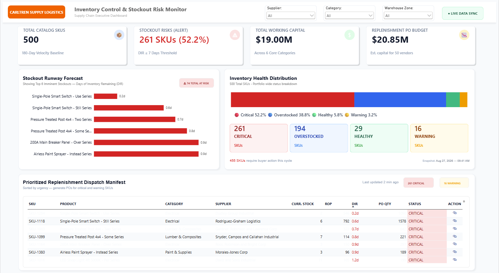
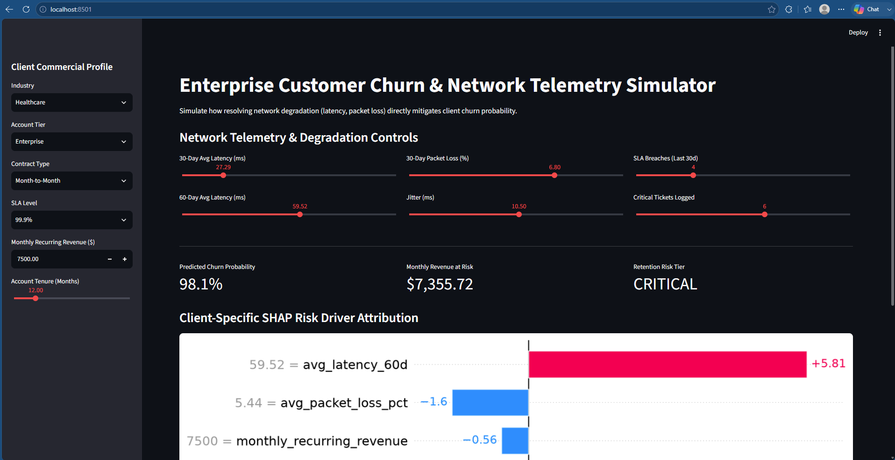
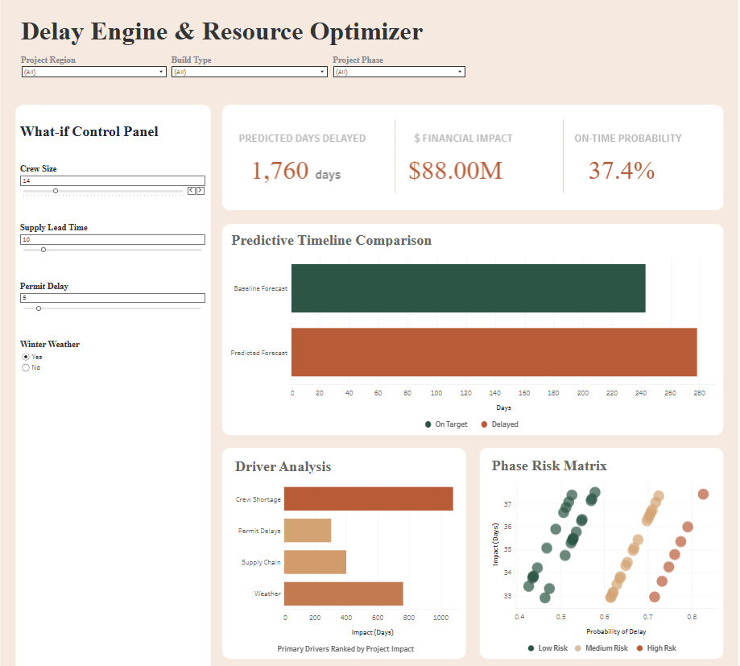
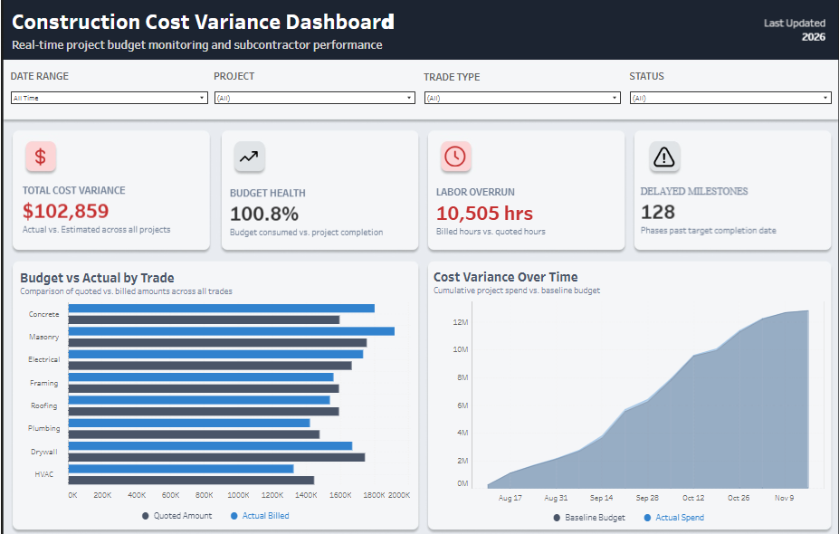
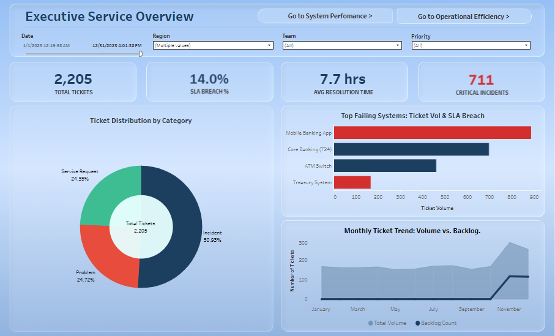
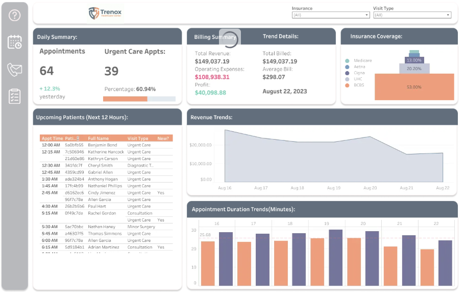
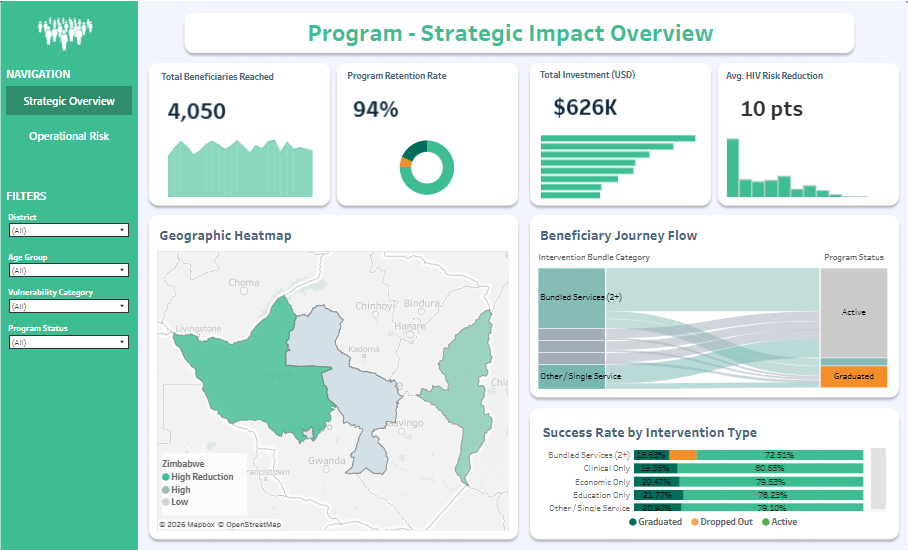
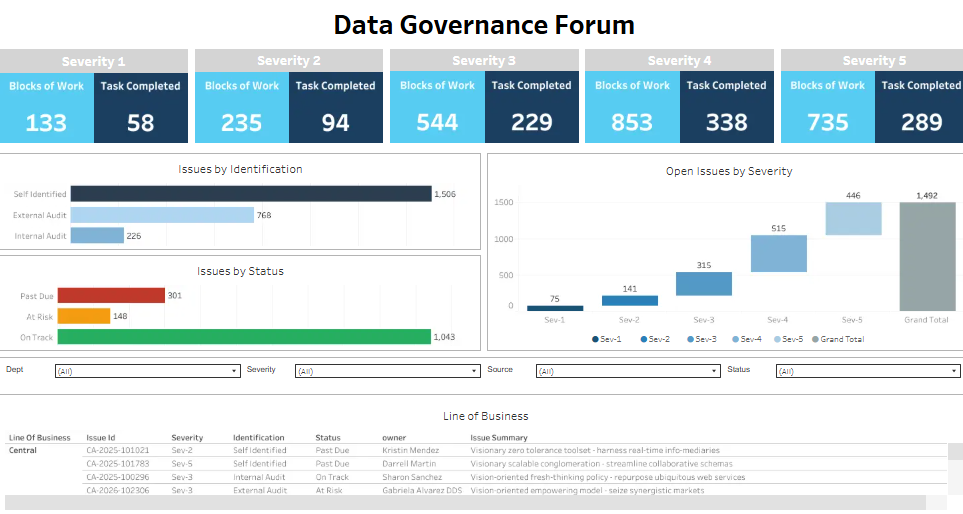
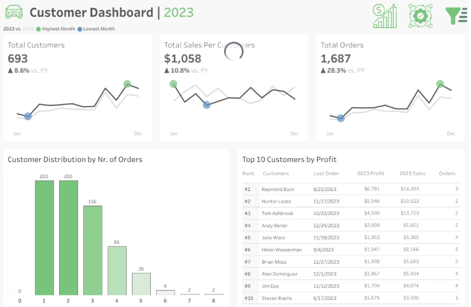

Specializing in dynamic inventory optimization, predictive churn modeling, and automated business intelligence solutions using SQL, Python, and Power BI.
End-to-end analytics engineering — from ingestion pipelines to boardroom decision suites.

Problem: $19.00M tied in inventory without real-time stockout visibility across 500+ dynamic SKUs.
Solution & Impact: Multi-tier PostgreSQL CTEs computing rolling ADD and vendor-adjusted ROP; isolated $20.85M replenishment risk across 261 critical SKUs with automated Python PO generation.

Problem: 180-day telemetry signal degradation driving silent enterprise account cancellations.
Solution & Impact: Optuna-tuned XGBoost model (0.781 ROC-AUC) integrated with client-level SHAP explanations; deployed live Streamlit simulator prioritizing $3.45M in MRR at risk.

What-If simulation model isolating crew shortages and lead-time delays impacting 1,760 project days.

Budget monitoring across 8 contractor trades; tracking $102k cost variance and 10,505 labor overrun hours.

Incident monitoring across Mobile Banking, Core Banking (T24), and ATM switches tracking 2,205 tickets.

Real-time appointment scheduling, payer mix breakdown (53% BCBS), and duration operational trends.

Spatial analytics mapping program engagement across regional districts with $626K allocated funding.

Workstream tracking across Severity 1–5 compliance issues, audit sources, and remediation pipelines.

Year-over-year sparkline performance tracking, order frequency histograms, and top-tier client profit rankings.
Full-stack data infrastructure — from raw ingestion to insight delivery.
Architected automated Power BI dashboards using DAX and Power Query; built Python inventory reorder models cutting excess holding costs by 12% across 12+ sites.
Designed automated Tableau telemetry dashboards reducing enterprise churn by 10%; automated daily batch reporting via Python to cut SLA turnaround time by 30%.
Built automated data validation pipelines in SQL Server (T-SQL) and SSIS for 5,000+ records, maintaining 99% data integrity for external donor audits.
Maintained real-time Tableau dashboards tracking core banking transaction failures; ran SQL root-cause analysis on error logs to cut escalation resolution time by 25%.
I am a Data Analyst & Analytics Engineer with a Master’s in Data Science from Montclair State University. My experience spans supply chain logistics, telecommunications, banking, and public health data systems.
I specialize in turning messy transactional data into clean, reproducible data pipelines and intuitive executive tools. Most of my work sits at the intersection of complex SQL (CTEs, window functions), Python automation engines, and interactive Business Intelligence in Power BI and Streamlit.